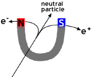
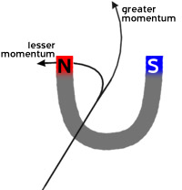

In order to find out things about particles, physicists measure their charge and momentum. To do this they observe particle collisions in strong magnetic fields, because different kinds of particles behave very differently in a magnetic field depending on their charge and their momentum.
For one thing, the signs of charged particles
can easily be read from their paths, since they curve in opposite directions in the same
magnetic field.

For another, the momenta of particles can be calculated easily because the path of a particle with greater momentum bends less than that of one with lesser momentum.